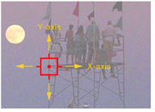
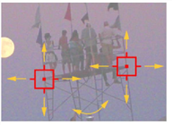
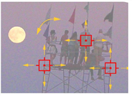

Before we get into the first example, let’s review a few tracking concepts. You can track as many features or patterns as required with the Tracker node in Nuke. How do you decide whether to track one, two, or more features? It depends on what you want to do with the data and the level of accuracy you need in the result. Here are some general guidelines:
|  |  |
| One track: X and Y position only. |
Two tracks: X, Y, and Z-rotation. |
|
 |
| Three tracks: X, Y, Z-rotation, & scale. |
• One-point tracking - Track one feature’s horizontal (x-axis) and vertical (y-axis) position, with little or no perspective change on the image. You can apply this information to move other elements in the composite or apply the inverse to stabilize the image.
• Two-point tracking - Track horizontal and vertical position for two features. The feature positions, relative to each other, indicate whether the image is rotating clockwise or counter-clockwise (z-axis rotation). In some cases, two tracking points are sufficient to calculate the scaling of the features as well.
• Three-point tracking - Track horizontal and vertical position for three features. Provides all the benefits of two-point tracking with an additional set of tracking data for more accuracy on z-rotation and scaling.
• Multi-point tracking - Again, all the benefits of fewer tracks with additional sets of tracking data. Three-point is usually sufficient for most 2D tracking needs, but multi-point makes it possible to distort and match-move another element into the points of the features you track, for example, using four tracks and a CornerPin2D node.
|
|